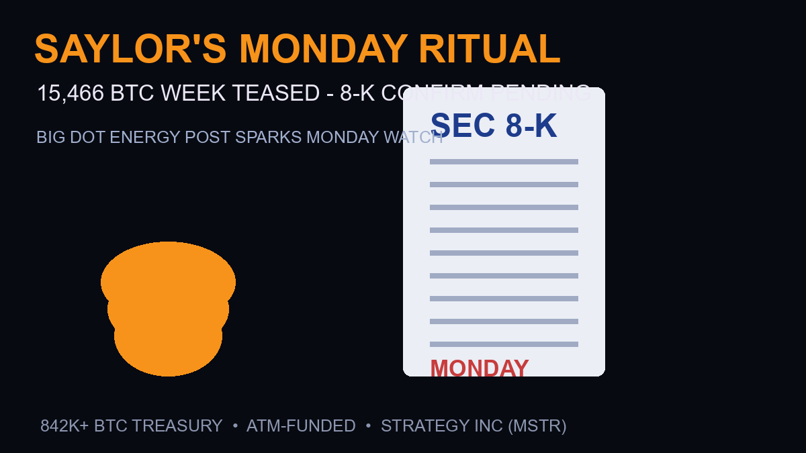

Strategy Buys 4,603 Bitcoin for $369.7M — First Purchase in Two Months, 8-K Confirms

The market’s most predictable Monday ritual is back — with a bigger number than usual. Michael Saylor spent the weekend teasing Strategy’s latest Bitcoin purchase with his signature dot-chart post, and crypto media (Yahoo Finance) reports the Monday 8-K is set to confirm a 15,466 BTC week. If confirmed at recent prices, that’s well over a billion dollars of Bitcoin bought in seven days — during the exact week the rest of the market was panicking about Warsh.
Filing Confirmed (September 1): 4,603 BTC — Not the Teased 15,466
The 8-K has landed — and the real number is a fraction of the tease. Strategy confirmed a 4,603 BTC purchase for approximately $369.7 million (average ~$80,340 per coin) for the week of August 24–30, per the company’s filing covered by Investing.com and Cryptorank. That’s roughly 30% of the 15,466 BTC Saylor’s dot-chart post had teased — and the twist doesn’t stop there.
Three things the filing confirms:
- First purchase in two months: after weeks of holding (and a stretch that included selling), this is Strategy’s first acquisition since early July — a genuine restart signal
- ATM funding machine continues: 4,531,421 Class A shares were sold August 24–30, generating $602.8 million in net proceeds — the $369.7M purchase was funded from that
- Bought the dip discipline: the purchase landed right into the Warsh-driven dip (~$77,700–$78,700 range), at an average price roughly 5% below the $81K peak
Why the gap vs the tease? The dot-chart posts signal capacity and intent, not commitments — ATM share sales during a week when the stock dipped constrain what can actually be deployed. The discrepancy between 15,466 teased and 4,603 confirmed is itself the story: the treasury machine slowed, not stopped.
Status as of Monday morning IST: the 8-K had not yet appeared on EDGAR or Strategy’s financial-documents page (which currently lists the August 24 filing as latest). Evidence assembled across the weekend: Saylor’s “Big Dot Energy” post (15,466 dots), Polymarket’s “Will MicroStrategy announce a Bitcoin purchase August 25–31?” market trading at 93% Yes, and the historical Monday-morning filing pattern (Bitcoin Magazine). Until the filing prints, the 15,466 figure remains a tease — exactly as flagged below. This page updates the moment EDGAR shows the document, with the official count, aggregate price and average cost per coin.
What the 8-K Will Confirm (and What’s Still a Tease)
- The tease: Saylor’s “Big Dot Energy” post with 15,466 dots — his standard format for previewing the week’s haul before the official filing
- The filing: Strategy’s Monday Form 8-K to the SEC converts the tease into official numbers: BTC acquired, aggregate purchase price, and average price per coin
- The funding: recent purchases have been ATM-funded — the company sells MSTR shares through at-the-market programs and deploys proceeds into Bitcoin (StockTitan’s filing summaries document this pattern)
- The flag: until the 8-K actually hits EDGAR, the 15,466 figure is a media-reported tease, not a confirmed number — treat it as pending (this page updates when the filing lands)
Why This Week’s Buy Matters More Than Usual
Context changes the read. Strategy bought into the $80K breakout euphoria earlier in August — but this week’s purchase window included Warsh’s hawkish Jackson Hole speech and the drop to ~$77,700. A 15,466 BTC week bought partly into that weakness would be Strategy’s most counter-cyclical print in months — Saylor buying the Warsh dip while leveraged traders got flushed.
There’s also a nuance from the August 3 filing worth remembering: Strategy has sold Bitcoin before (1,638 BTC that week, per CoinDesk) while repurchasing its own STRC preferred stock. The treasury machine is no longer a one-way buy-only story — it actively manages the balance sheet. That makes each 8-K a two-directional signal: the buy number matters, but so does what they’re selling to fund it.
The Pattern: Why Traders Watch This Filing Like Earnings
Strategy’s 8-Ks have become a weekly sentiment instrument. A big buy during weakness signals conviction and historically steadies the stock and BTC alike; a small week during strength barely moves anything. The ATM mechanics also create a feedback loop traders track: rising MSTR prices make ATM dilution cheaper, which funds bigger buys, which supports BTC, which lifts MSTR. Warsh’s rate-hike repricing is the first real stress test of that loop in months — Monday’s number tells us whether the machine kept running under pressure.
Frequently Asked Questions
What is Strategy’s Monday 8-K?
Strategy (formerly MicroStrategy) files a Form 8-K with the SEC most Mondays disclosing its prior week’s Bitcoin purchases — the exact amount acquired, aggregate price, and average price per coin. It’s the official confirmation of the weekend teaser posts Michael Saylor publishes on X.
How many Bitcoin did Strategy buy this week?
Saylor teased a 15,466 BTC week via his dot-chart post, per Yahoo Finance coverage. The figure is a tease until the Monday 8-K confirms it — this page will update with the official numbers when the filing lands.
How does Strategy fund its Bitcoin purchases?
Primarily through at-the-market (ATM) equity programs — selling newly issued MSTR shares and deploying proceeds into Bitcoin. Recent 8-Ks document this pattern, including weeks where the company sold Bitcoin and repurchased preferred stock instead of buying.
How much Bitcoin does Strategy hold now?
As of the August 3 filing, Strategy held approximately 842,138 BTC after a week that included selling 1,638 BTC. The Monday 8-K will show whether the treasury crossed a new milestone this week.
Sources
- Yahoo Finance — Saylor teases 15,466 BTC week ahead of Monday 8-K
- SEC EDGAR — Strategy 8-K filing archive (ATM + purchases format)
- StockTitan — 8-K summary, ATM sales pattern
- CoinDesk — Aug 3 filing: 1,638 BTC sold, 842,138 BTC holdings
- Fortune — prior-week 8-K pattern reference